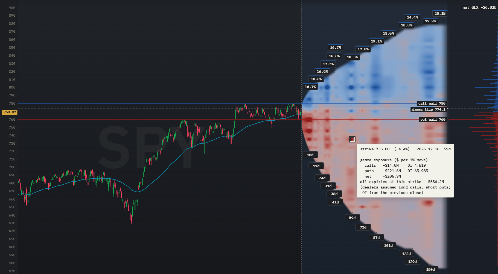

Gamma exposure (GEX): how dealer hedging can damp or amplify moves
Market makers who sell options hedge them with the stock, and their hedging can slow a market down or speed it up. Gamma exposure (GEX) estimates which of the two is more likely, and where the levels lie at which that could change. Throughout the guide we work through a real example: SPY's option chain on 20 October 2026, analysed with OptionsCone.
In short: GEX adds up, over all open option contracts, how many dollars of stock the market makers on the other side would have to trade for a 1% move. OptionsCone shows it for every strike and expiry on the probability cone, as a profile over all expiries along the price axis, with the gamma flip and the call and put walls drawn into the chart.
What is GEX?
Market makers sell options to customers and hedge the risk with the underlying stock. When the stock moves, the delta of their options changes, and they buy or sell shares to stay hedged. How fast delta changes with the price is called gamma. Gamma exposure (GEX) multiplies each contract's gamma by its open interest and adds up the result over all open contracts. It estimates how many dollars of stock the market makers would have to trade if the price moved by 1%.
How GEX is calculated
The standard formula for one contract is:
Calls count positive and puts negative, and the sum over all contracts is the total GEX. The sign rests on an assumption about who holds what: customers mostly sell calls, for example as covered calls, and buy puts as protection. The market makers on the other side are then long the calls and short the puts. Nobody can see the real positions in public data, so every GEX figure rests on this convention.
OptionsCone uses each contract's own gamma, at a volatility read from good quotes only. Open interest counts for every contract, including those whose quote is too wide to read a volatility from.
Positive and negative GEX
- Positive GEX: to stay hedged, the market makers buy when the price falls and sell when it rises. Their hedging works against the move and tends to damp it.
- Negative GEX: they sell when the price falls and buy when it rises. Their hedging works with the move and can amplify it.
Many traders read positive GEX as a calmer market and negative GEX as a market prone to larger swings. It is a tendency, not a rule, and it says nothing about the direction of the next move.
The gamma flip: where GEX changes sign
The gamma flip, also called the zero gamma level, is the share price at which the total GEX changes sign. To find it, every contract's gamma is recomputed at hypothetical share prices around the current one, and the total is added up again at each of them. Where the total crosses zero lies the flip. Above it, dealer hedging tends to damp moves, below it, it tends to amplify them. The flip is one of the levels GEX traders watch most closely, because a market that falls through it can change its character.
Call wall and put wall
The call wall is the strike with the largest call GEX above the price, and the put wall the strike with the largest put GEX below it. How they are read is mostly practitioner experience:
- The call wall as resistance: as the price rises toward it, market makers who are long these calls sell more and more shares to stay hedged, which can slow a rally.
- The put wall as support: market makers who are short the puts have to sell as the price falls, so the put wall is also read as the level below which a decline can speed up.
- Between the walls: with positive GEX, the price often stays inside the range, which is why many option sellers place their short strikes outside the walls.
- Beyond a wall: once the price breaks through, the damping is gone and the move can run further.
One effect has solid support in research: on expiration days, stocks with heavy option open interest close at or near a strike more often than chance would explain, which Ni, Pearson and Poteshman (2005, Journal of Financial Economics) attribute to the hedging of option positions. Walls as support and resistance rest on observation rather than on comparable evidence.
What GEX assumes
Three things belong to every GEX reading. The dealer positioning is assumed, not measured. Open interest comes from the previous close, so positions opened today are not in it. And the walls and the flip move: open interest changes every day, and gamma changes with every move of the price and of implied volatility. A GEX picture is a snapshot.
GEX in OptionsCone
Download a ticker and click GEX. Three things appear:
- The GEX map: every strike and expiry of the cone colored by its net GEX, calls minus puts at that strike. Blue marks strikes where hedging tends to damp moves, red where it tends to amplify them.
- The profile: on the right, the net GEX of every strike summed over all expiries, as horizontal bars, with the total net GEX above it.
- The levels: the gamma flip as a dashed line across the chart, and the call wall and the put wall as lines in the colors of the profile.
Hover over a contract to see the call GEX, the put GEX and the net GEX at its strike and expiry, with the open interest of both sides.

Worked example: SPY on 20 October 2026
From a download of SPY on 20 October 2026 at 15:09 New York time, with SPY at 768.87:
| Level | Price | Distance from SPY |
|---|---|---|
| Call wall | 780 | +1.4% |
| Gamma flip | 774.1 | +0.7% |
| Put wall | 760 | −1.2% |
Data: SPY option chain, downloaded on 20 October 2026 at 15:09 New York time, quotes delayed about 15 minutes, open interest from the previous close. 21 expiries up to 162 days. All figures calculated with OptionsCone.
Read it as: SPY traded just below the gamma flip, and the total net GEX was about −$6.8 billion per 1% move: a market in which dealer hedging tends to amplify moves rather than damp them. The largest negative strikes sat at 760 and 750, where the puts dominated, and the largest positive ones at 800 and 780, where the calls did. A rise of about 0.7 percent would have taken SPY above the flip, into the range where hedging starts to damp moves, with the call wall less than another percent higher.
The day before, the flip had briefly sat above the call wall. That happens in negative-gamma markets with heavy put positioning around the price: the calls at the call wall are then not enough to outweigh all the puts, and the total only turns positive higher up.
How traders use GEX
- Choosing where to sell premium: with positive GEX, many option sellers place short strikes outside the walls, where hedging has so far held the price back. With negative GEX they are more cautious, because moves tend to run further.
- Watching the flip: a market moving from above the flip to below it can change from calm to volatile, which matters for any position that depends on the price staying in a range.
- Combining GEX with probabilities: a strike beyond a wall and with a low probability of being touched has two arguments for it, one from positioning and one from the option prices. OptionsCone shows both on the same chart.
GEX FAQ
What is GEX?
Gamma exposure (GEX) estimates how many dollars of stock the market makers on the other side of all open options would have to buy or sell for a 1% move in the underlying, under the usual assumption that they are long the calls and short the puts customers hold. Positive GEX means their hedging works against moves, negative GEX means it works with them.
What is the gamma flip?
The share price at which the total GEX of all contracts changes sign. Above the flip, dealer hedging tends to damp moves, below it, it tends to amplify them.
What are call walls and put walls?
The strike with the largest call GEX above the price and the strike with the largest put GEX below it. Many traders read the call wall as resistance and the put wall as support, and moves beyond a wall as moves that can run further.
Is positive GEX bullish?
Not in itself. Positive GEX points to a market where dealer hedging damps moves in both directions, negative GEX to one where it amplifies them. It describes how the price may move, not in which direction.
How often does GEX change?
Open interest is published once a day, from the previous close, so the open positions behind GEX change daily. Gamma changes with every move of the price and of implied volatility, so the walls and the flip move as well.
We use SPY as an example. The same steps work for any stock or ETF with listed options. Nothing on this page is a recommendation to buy or sell SPY or any options on it.
Try it on your own ticker
Every figure on this page comes from one download and one click. The manual explains each control.